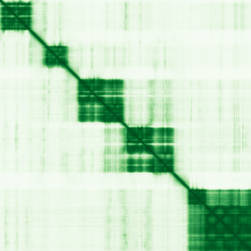
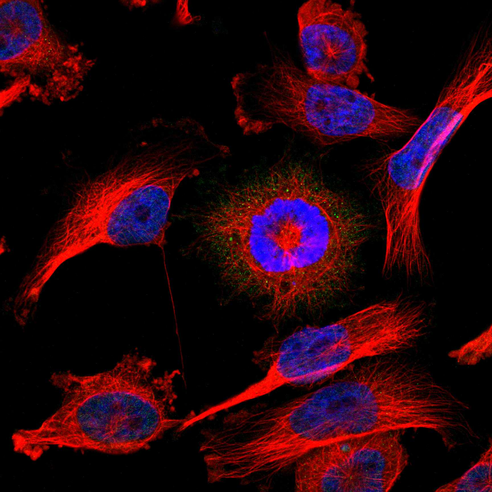
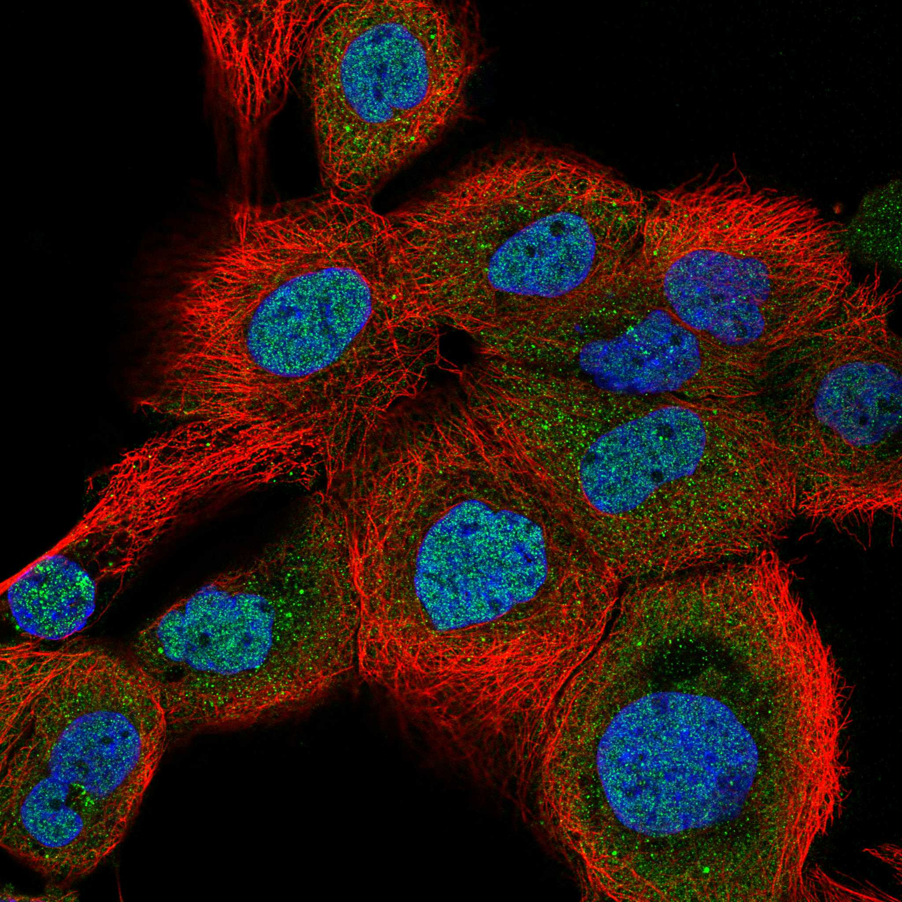

type: protein-evaluation gene: "DTX3L" date: 2026-06-01 tags: [protein-scout, nucleoplasm, evaluation] status: scored ---
DTX3L 核蛋白评估报告
1. 基本信息
| 项目 | 内容 |
|---|---|
| 基因名 / 别名 | DTX3L / BBAP |
| 蛋白全名 | E3 ubiquitin-protein ligase DTX3L |
| 蛋白大小 | 740 aa / 83.6 kDa |
| UniProt ID | Q8TDB6 |
2. 评分总览
| 维度 | 得分 | 新权重 | 加权后 | 关键证据摘要 |
|---|---|---|---|---|
| 核定位特异性 | 6/10 | x4 | 24.0 | HPA Nucleoplasm+Cytosol (dual main); GO nucleoplasm IDA:HPA; UniProt Nucleus+Cytoplasm (均 ECO:0000269) |
| 蛋白大小 | 3/10 | x1 | 3.0 | 740 aa, 83.6 kDa |
| 研究新颖性 | 4/10 | x5 | 20.0 | PubMed strict=62 |
| 三维结构 | 4/10 | x3 | 12.0 | PDB 2个 (RING 601-740, DTC 126-200); AF pLDDT 数据获取失败 |

| 调控结构域 | 6/10 | x2 | 12.0 | RING finger E3 ligase + DTC (Deltex C-terminal) domain; 组蛋白 H2A/H2B/H3/H4 泛素化 |
| PPI 网络 | 6/10 | x3 | 18.0 | STRING PARP9 (0.999 exp 0.873), PARP14 (0.975), STAT1 (0.926 exp 0.510) |
| 加权总分 | 89/180** | |||
| 互证加分 | +0.0 | |||
| 归一化总分 (÷1.83) | 48.6/100** |
3. 详细分析
3.1 核定位证据
| 来源 | 定位 | 可信度 |
|---|---|---|
| UniProt | Cytoplasm (ECO:0000269 x3), Nucleus (ECO:0000269 x2), Early endosome membrane, Lysosome membrane | 多源实验证据 |
| GO-CC | nucleoplasm (IDA:HPA), nucleus (IDA:UniProtKB), cytosol (IDA:HPA), lysosome, endosome | 多源验证 |
| HPA (IF) | Nucleoplasm + Cytosol (dual main) | Supported, 6张IF原图 |
| 功能 | DNA damage repair (monoubiquitinates histones), interferon antiviral response, endosomal sorting | 核质双功能 |
HPA IF 状态: Supported — 6 张 IF 原图可用，HPA 分类为 Nucleoplasm + Cytosol (dual main)。核质双定位由 UniProt/GO 独立验证。 
结论: DTX3L 具有明确的核质双定位，HPA + UniProt + GO 三源一致。核内功能（组蛋白泛素化/DNA 修复）和胞质功能（内体分选/抗病毒）均获实验支持。
3.2 结构与数据源
| 指标 | 数值 |
|---|---|
| AlphaFold | AF-Q8TDB6-F1 |
| 平均 pLDDT | 数据获取失败（SSL error） |
| PDB | 3PG6 (1.70A, RING domain 601-740 tetramer), 8R79 (2.18A, DTC domain 126-200) |
| InterPro | IPR039396/9/8 (Deltex family), IPR001841 (RING finger), IPR013083 (Zinc finger RING/FYVE/PHD), IPR048418/409 |
| Pfam | PF18102 (DTC), PF21717/18, PF23222, PF13923 (RING finger) |
AF pLDDT 获取失败，但 2 个 PDB 结构分别覆盖 RING (C-terminal) 和 DTC (N-terminal) 结构域。全长结构预测不可用。
3.3 研究现状
| 指标 | 数值 |
|---|---|
| PubMed strict (Title/Abstract) | 62 |
| PubMed broad | 100 |
| 别名 | BBAP（未用于 scoring） |
关键文献：PMID:38834853 (PARP14/PARP9-DTX3L interferon ADP-ribosylation, EMBO J 2024), PMID:36421918 (DTX3L review in cancer, Biochem Soc Trans 2022), PMID:39242775 (ubiquitylation of nucleic acids, EMBO Rep 2024), PMID:41507172 (USP10/DTX3L/SATB2 in glioma, Nature Comms 2026), PMID:39091264 (L-carnitine/cachexia, 2024). 文献以PARP9-DTX3L axis 和肿瘤为主，集中在 2022-2026 年。
3.4 PPI 网络（三源综合）
| Partner | Source | Score/Evidence | Relevance |
|---|---|---|---|
| PARP9 | STRING+UniProt | 0.999 (exp 0.873) / 2 exp | 核心合作因子，DNA repair/antiviral |
| PARP14 | STRING | 0.975 (exp 0.292) | ADP-ribosylation，干扰素应答 |
| PARP15 | STRING | 0.954 | ADP-ribosylation family |
| STAT1 | STRING | 0.926 (exp 0.510) | 干扰素信号，抗病毒转录 |
| UBE2D1 | STRING+IntAct | 0.848 (exp 0.696) / Y2H | E2 泛素结合酶 |
| NOTCH2 | STRING | 0.862 (exp 0.314) | Notch 信号 |
| H4C6 | STRING | 0.657 (exp 0.335) | 组蛋白 H4 底物 |
| UBE2L6 | STRING | 0.653 (exp 0.120) | ISG15 E2，抗病毒 |
| SPG21 | UniProt | 10 experiments | Maspardin, 内体运输 |
| DTX1 | STRING | 0.806 (exp 0.292) | Deltex 家族 E3 paralog |
| MX1 | STRING | 0.736 | 抗病毒 GTPase |
PPI 网络以 PARP9-DTX3L 为绝对核心（score 0.999），延展至 PARP 家族（PARP14/15）和干扰素抗病毒通路（STAT1/MX1）。Ubi 体系中 E2 酶（UBE2D1/UBE2K/UBE2L6）互作已获实验验证。结构上 PTM 写作链清晰：PARP9 介导 ADP-ribosylation — DTX3L 介导 ubiquitination。
4. 总体评价
DTX3L 为 Deltex 家族 E3 泛素连接酶，总评分 48.6/100。主要优点：PARP9-DTX3L 轴功能明确（DNA repair + antiviral）、HPA IF 证实核质双定位且有 6 张原图、PPI 网络集中于 PARP 和 interferon 通路（机制链清晰）。主要限制：PubMed=62（偏高，近 >80 阈值）、蛋白较大（740 aa，83.6 kDa）、AF 结构数据缺失。与 PARP9 的协作中涉及组蛋白泛素化和染色质调控，可能在 TE 相关的染色质重塑中有交叉角色。
5. 数据来源
- UniProt: https://www.uniprot.org/uniprotkb/Q8TDB6
- AlphaFold: https://alphafold.ebi.ac.uk/entry/Q8TDB6
- PubMed: https://pubmed.ncbi.nlm.nih.gov/?term=DTX3L
- Protein Atlas: https://www.proteinatlas.org/ENSG00000163840-DTX3L
HPA IF 状态: HPA IF 图像已本地嵌入。

PAE 图像说明: AlphaFold PAE 图像已重新获取并嵌入（见下方 PAE 图像修正块）；结构判断仍结合 pLDDT 与 PAE 综合判断。
<!-- AF_PAE_REPAIR_START --> PAE 图像修正（2026-06-05）: AlphaFold 提供 predicted aligned error 图像；此前“PAE 图像暂无数据”的表述为未获取/未嵌入导致。